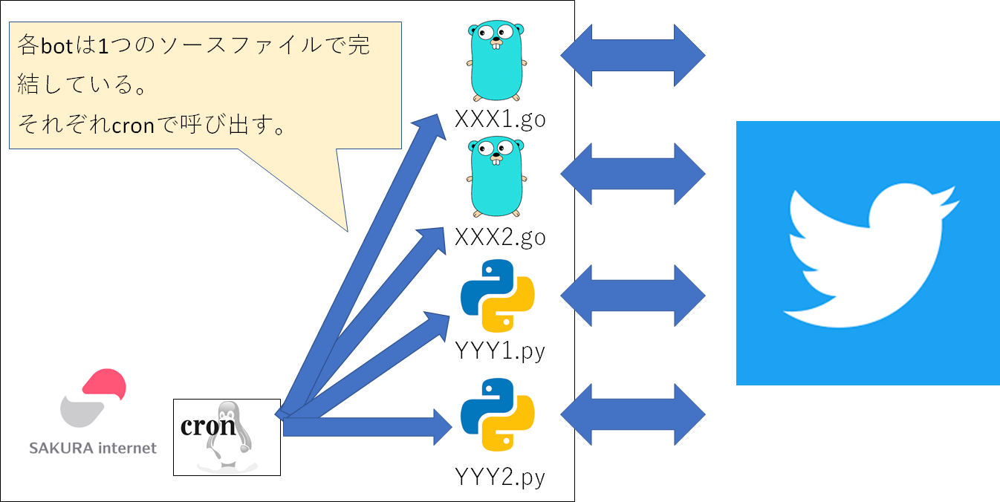

cron脱却（コンテナ化を見据えて）
Tweetホーム > 個人開発したことまとめ > cron脱却
cron脱却（コンテナ化を見据えて）
新しく配属されたプロジェクトで Docker や GitLab で自動リリース機能構築(CD)など、これまで触れたことのない技術が大量にあったので、それらを使用することで少しでも早くその技術に慣れ、使いこなせるようになりたかった。
なので今後コンテナ化、GitLab で CD 機能を構築していくが、その前に cron から脱却し、各言語のスケジューラを使用することでコンテナ化したときの移植性を高めたい。
稼働時間を変えたいとか、新しく bot を作った時の稼働タイミングの設定を、これまで使用していた cron から各アプリで行うように修正することで、ローカルで設定したものを GitLab に push してしまえば後は勝手にリリースされて時間になったら bot が稼働するという状態を目指したい。
どんな仕組み？
対応前

1つ1つのプログラムは別ファイルになっており、それを cron でキックしていた。
対応後
親となるプログラムを作り、そこで稼働時間の設定を行い、時間になったら動くような仕掛けを作った。

Go のスケジューラと実装
jobrunner というライブラリを使用した。
python のスケジューラと実装
schedule というライブラリを使用した。
参考
- schedule
- 【Python】scheduleを使ってモジュールを定期実行させよう
- 【Python】Scheduleモジュールを用いたイベント定期実行｜指定時間動作のスケジュール関数作成例と使い方解説
- 【Python】Scheduleライブラリでタスクスケジュールを管理する
- jobrunner
- Golang でジョブのスケジューリング実行ができる JobRunner を試した
ぶつかった壁とか学んだこととか
Go は割とすんなり行けた。
├── scheduler.go
└── XXX
└──XXX1.go
⇒scheduler.go で XXX1.go を import してしまえばいい感じに呼び出してくれる。何か間違えていたらコンパイルエラーで教えてくれる。
python はちょっと苦戦。
今までは1つのファイルに全ての処理を書いていたが、 scheduler.py から違うディレクトリにある python プログラムを呼び出す必要があり、その場合の書き方がわからない。
├── scheduler.py
└── YYY
└──YYY1.py
⇒scheduler.py で YYY1.py を import するだけだとうまくいかない。
python で別ディレクトリのモジュールを呼び出す場合、以下4つのやり方がある。
- 絶対インポート／相対インポート
- sys.path.append で対象ファイルのパスを追加
- 環境変数 PYTHONPATH を設定
- .pthファイルを作成
絶対インポート／相対インポート
呼び出したいモジュールの相対パスを指定して import する方法。
例：以下のような階層構造の場合。
├── main.py
└── lib
├── liba
│ └── lib_a.py
└── libb
└── lib_b.py
絶対インポート
main.py から lib_a.py を import したい。
aaa.funcA()
相対インポート
lib_a.py から、一つ上の階層にある libb を指定したい
bbb.funcB()
sys.path.append で対象ファイルのパスを追加
python が import したモジュールを検索するパスは、標準ライブラリのsysモジュールのsys.pathに格納されている。 sys.path は sys.path.append([対象パスの文字列]) で追加できるので、 import 前にこれを実行すれば別ディレクトリでも import 可能。
from lib_a import aaa
sys.path.append('..libb.lib_b')
from lib_b import bbb
環境変数 PYTHONPATH を設定
環境変数 PYTHONPATH に読み込んでほしいモジュールのパスを追加すると読み込んでくれるようになる。
.pthファイルを作成
site-packages .pthファイルを作成してそこに対象モジュールのパスを書くと読み込んでくれる。
参考
- 1. コマンドラインと環境 1.2. 環境変数
- PYTHONPATHとは
- Pythonプログラムを外部から呼び出す方法
- Pythonでimportの対象ディレクトリのパスを確認・追加（sys.pathなど）Pythonでimportの対象ディレクトリのパスを確認・追加（sys.pathなど）
- Pythonで他のディレクトリからプログラムをimportするやり方
- Pythonでimport仕組みがよくわからないです。エラーも出ますImportError: No module named 'config'
- Pythonで独自モジュールのディレクトリパスを通す方法
- Pythonインポート周り徹底理解への道Pythonインポート周り徹底理解への道